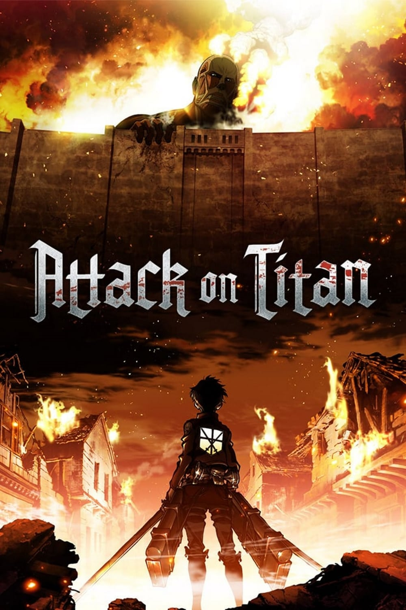
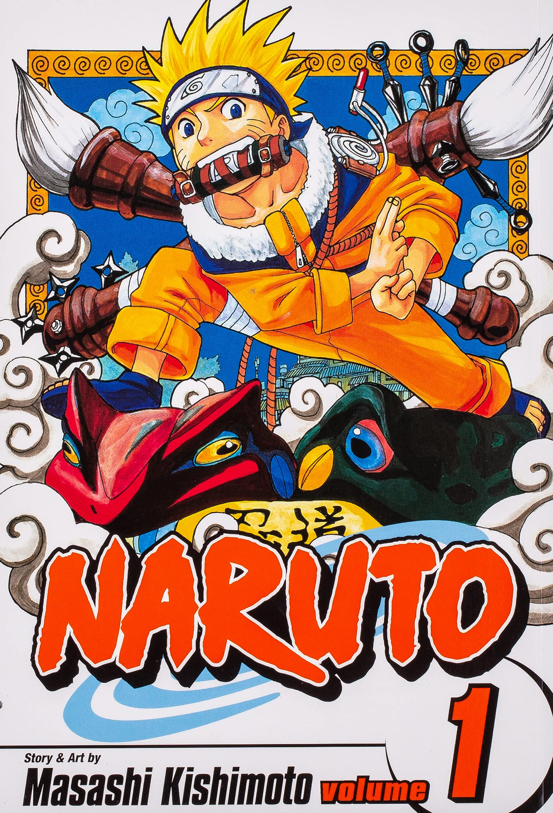

Filmi
Seznam filmov
The rise of Skywalker
Naslednji del franšize in zaključek trilogije nadaljevanja Vojne zvezd ter Sage Skywalkerja.
Izdano: 2019-12-18
Žanr: znanstvena fantastika, fantazija, akcija, pustolovščina, vojna
Igralci: Daisy Ridley, Adam Driver, John Boyega, Oscar Isaac, Kelly Marie Tran
Trajanje: 142 min
Država: Združeno kraljestvo, Združene države Amerike, Jordanija
Produkcija: Lucasfilm, Bad Robot, Walt Disney Pictures
Glej
Death Note

Šinigami, kot bog smrti, lahko ubije kogar koli - pod pogojem, da vidi obraz svoje žrtve in zapiše njeno ime v zvezek, imenovan Death Note. Nekega dne Ryuk, ki se dolgočasi zaradi načina življenja s šinigami in ga zanima, kako bi človek uporabil Death Note,...
Glej
Ass the gods will
Takahata Shunov dan v srednji šoli se začne tako dolgočasno kot vedno, vendar se ne konča tako. On in njegovi sošolci so prisiljeni igrati otroške igre s smrtonosnimi vložki. Brez pojma, kdo zaostaja, je edina stvar, ki jo lahko naredijo Shun in drugi učenci, to, da še naprej poskušajo zmagati.
Izdano: 2014-11-15
Žanr: triler, grozljivka, komedija, misterij
Igralci: Sota Fukushi, Ryunosuke Kamiki, Hirona Yamazaki, Mio Yuki, Jingi Irie
Trajanje: 117 min
Država: Japonska
Produkcija: Toho Company, Ltd., Toho Pictures, Inc., OLM
Glej
Avengers:Endgame

Po uničujočih dogodkih Avengers: Infinity War je vesolje v ruševinah zaradi prizadevanj Norega Titana, Thanosa. S pomočjo preostalih zaveznikov se morajo Maščevalci znova zbrati, da bi razveljavili Thanosova dejanja in enkrat za vselej vzpostavili red v vesolju, ne glede na morebitne posledice.
Izdano: 2019-04-24
Žanr: pustolovščina, znanstvena fantastika, akcija
Igralci: Tilda Swinton, Paul Bettany, Josh Brolin, Elizabeth Olsen, Samuel L. Jackson
Trajanje: 181 min
Država: Združene države Amerike
Produkcija: Marvel Studios, Walt Disney Studios
Glej
Fast and Fuirius 6

Hobbs naroči Dominicu in Brianu, da ponovno zbereta svojo posadko, da uničita ekipo plačancev: Dominic se nepričakovano zaplete tudi ob soočenju s svojo domnevno pokojno punco Letty.
Izdano: 2013-05-21
Žanr: akcija, kriminalka, triler
Igralci: Andrew Koji, Andrei Zayats, Jason Statham, Clara Paget, Rita Ora
Trajanje: 131 min
Država: Združene države Amerike
Produkcija: Dentsu, Original Film, One Race, Relativity Media, Universal Pictures, Fuji Television Network, F & F VI Productions A.I.E.
Glej
Attack on Titan
Pred stoletji so človeštvo skoraj do izumrtja pokončala pošastna humanoidna bitja, imenovana titani, zaradi česar so se ljudje v strahu skrivali za ogromnimi koncentričnimi zidovi. Zaradi česar so ti velikani resnično grozljivi, je to, da se njihov okus po človeškem mesu ne rodi ...
Glej
Cars 2

Zvezdniški dirkalnik Lightning McQueen in njegov prijatelj Mater se odpravita v tujino, da bi tekmovala na dirki za svetovno veliko nagrado. Toda pot do prvenstva postane kamnita, saj se Mater znajde ujet v lastno zanimivo pustolovščino: mednarodno vohunjenje.
Izdano: 2011-06-11
Žanr: Animirani, Družinski, Pustolovski, Komedija
Igralci: Owen Wilson, Larry the Cable Guy, Michael Caine, Emily Mortimer, John Turturro
Trajanje: 106 min
Država: Združene države Amerike
Produkcija: Pixar, Walt Disney Pictures
Glej
D-Day
Nekateri ljudje so temu rekli samomor, toda za Rangerje iz 2. bataljona je to druga beseda za misijo. Ko elitni skupini ameriških vojakov ukažejo, naj uničijo vrsto nemških strojničnih gnezd, se znajdejo, da se slepo podajo na sovražno ozemlje. Številčno prekašani in orožniški, morajo tvegati življenje in telo, medtem ko prečkajo zahrbten teren, pri čemer nikoli ne vedo, kje se skriva sovražnik.
Izdano: 2019-09-13
Žanr: Vojna
Igralci: Martin Kove, Randy Couture, David Tom, Weston Cage, Chuck Liddell
Trajanje: 85 min
Glej
Hunter x Hunter

Hunter x Hunter je postavljen v svet, kjer lovci obstajajo za opravljanje najrazličnejših nevarnih nalog, kot je prijetje kriminalcev in pogumno iskanje izgubljenih zakladov na neznanih ozemljih. Dvanajstletni Gon Freecss je odločen postati najboljši možni lovec ...
Glej
Harry Potter and Philpphen's stone
Harry Potter je vse življenje živel pod stopnicami v hiši svoje tete in strica. Toda na svoj 11. rojstni dan izve, da je močan čarovnik – čaka ga mesto v šoli čarovništva in čarovništva Hogwarts. Medtem ko se ob pomoči prijaznega ravnatelja šole uči uporabljati svoje novo pridobljene moči, Harry odkrije resnico o smrti svojih staršev – in o zlobnežu, ki je kriv.
Izdano: 2001-11-16
Žanr: pustolovščina, fantazija, družina
Igralci: Terence Bayler, Maggie Smith, Ian Hart, Jamie Waylett, Fiona Shaw
Trajanje: 152 min
Država: Združeno kraljestvo, Združene države Amerike
Produkcija: Warner Bros. Pictures, Heyday Films, 1492 Pictures
Glej
It 2017

V majhnem mestu v Mainu se sedem otrok, znanih kot The Losers Club, sooči z življenjskimi težavami, nasilneži in pošastjo v obliki klovna po imenu Pennywise.
Izdano: 2017-09-06
Žanr: grozljivka, triler
Igralci: Bill Skarsgård, Jaeden Lieberher, Sophia Lillis, Finn Wolfhard, Jack Dylan Grazer
Trajanje: 135 min
Država: Združene države Amerike
Produkcija: RatPac-Dune Entertainment, New Line Cinema, Vertigo Entertainment, Lin Pictures, KatzSmith Productions, Warner Bros. Pictures
Glej
Messi
Njegovi učitelji, trenerji, prijatelji iz otroštva in soigralci pri Barci, skupaj z novinarji, pisatelji in uglednimi osebnostmi iz zgodovine nogometa, se zberejo v restavraciji, da bi analizirali in razločili Messijevo osebnost tako na igrišču kot izven njega ter se ozrli nazaj na nekatere najpomembnejših trenutkov v njegovem življenju. Gledano z edinstvene perspektive Álexa de la Iglesie, Messi poustvari igralčevo otroštvo in najstniška leta, od njegovih prvih korakov, z nogometno žogo, ki mu je vedno pri nogah, do odločitve, da zapusti Rosario in odide v Barcelono, ločitve od družine in vlogo, ki so jo v njegovi karieri odigrali posamezniki, kot so Ronaldinho, Rijkaard, Rexach in Guardiola.
Izdano: 2014-09-06
Žanr: dokumentarni film
Igralci: Marc Balaguer, Ramon Besa, Johan Cruijff, Andrés Iniesta, Juan Carlos Lo Sasso
Trajanje: 93 min
Država: Španija
Glej
Spy x Family
Za agenta, znanega kot "Somrak", nobeno naročilo ni previsoko, če je zavoljo miru. Somrak, ki deluje kot Westalisov mojster vohun, neumorno dela, da prepreči skrajnežem, da bi sprožili vojno s sosednjo državo Ostanijo. Za svojo zadnjo misijo mora investirati...
Glej
Jurassic Park

Bogat podjetnik skrivaj ustvari tematski park z živimi dinozavri, pridobljenimi iz prazgodovinske DNK. Pred dnevom odprtja povabi skupino strokovnjakov in svoja dva željna vnuka, da izkusijo park in pomagajo pomiriti zaskrbljene vlagatelje. Vendar je park vse prej kot zabaven, saj se varnostni sistemi izklopijo in dinozavri pobegnejo.
Izdano: 11.6.1993
Žanr: pustolovščina, znanstvena fantastika
Igralci: Sam Neill, Laura Dern, Jeff Goldblum, Richard Attenborough, Bob Peck
Trajanje: 127 min
Država: Združene države Amerike
Produkcija: Universal Pictures, Amblin Entertainment
Glej
Mission: Impossible - Rogue Nation

Ethan in ekipa se lotijo svoje najbolj nemogoče misije doslej – izkoreninjenja 'The Syndicate', mednarodne in visoko usposobljene prevarantske organizacije, ki je zavezana uničenju IMF.
Izdano: 2015-07-23
Žanr: akcija, pustolovščina, triler
Igralci: Nicholas Lupu, Mateo Rufino, Hermione Corfield, James McOran Campbell, Ulli Ackermann
Trajanje: 131 min
Država: Združene države Amerike
Produkcija: Paramount, China Movie Channel, Bad Robot, TC Productions, Alibaba Pictures Group, Odin, Skydance Media
Glej
Monty Python in sveti gral

Kralj Artur v spremstvu svojega štitonoše rekrutira svoje viteze okrogle mize , vključno s Sirom Bedeverom Modrim, Sirom Lancelotom Pogumnim, Sirom Robinom, Ne-Tako-Pogumnim-Kot-Sir-Lancelot, in Sirom Galahadom Čistim. Na poti se Arthur bori s Črnim vitezom, ki kljub temu, da so mu odrezali vse okončine, vztraja, da se še vedno lahko bori. Prispejo do Camelota, vendar se Arthur odloči, da ne bo vstopil, saj je "to neumno mesto".
Izdano: 1975-05-25
Žanr: pustolovščina, komedija, fantazija
Igralci: Graham Chapman, John Cleese, Terry Gilliam, Eric Idle, Terry Jones
Trajanje: 91 min
Država: Združeno kraljestvo
Produkcija: Python (Monty) Pictures Limited, Michael White Productions, National Film Trustee Company
Glej
Venom

Raziskovalni novinar Eddie Brock se poskuša vrniti po škandalu, a po nesreči postane gostitelj Venoma, nasilnega, super močnega nezemljanskega simbiota. Kmalu se mora zanesti na svoje novo pridobljene moči, da zaščiti svet pred mračno organizacijo, ki išče lastnega simbiota.
Izdano: 2018-09-28
Žanr: znanstvena fantastika, akcija
Igralci: Sope Aluko, Stan Lee, Martin Bats Bradford, Jared Bankens, Vickie Eng
Trajanje: 112 min
Država: Kitajska, Združene države Amerike
Produkcija: Avi Arad Productions, Matt Tolmach Productions, Pascal Pictures, Marvel Entertainment, Tencent Pictures
Naruto
Nekaj trenutkov pred rojstvom Naruta Uzumakija je ogromen demon, znan kot Kyuubi, lisica z devetimi repi, napadel Konohagakure, vas skritih listov, in povzročil opustošenje. Da bi končal Kyuubijevo divjanje, je vodja vasi, četrti Hokage, žrtvoval...
Glej
Fast and Furius Tokio Drift

Da bi se izognil zaporni kazni, se Sean Boswell odpravi v Tokio k svojemu vojaškemu očetu. V delu mesta z nizko najemnino se Shaun ujame v podzemni svet drift dirk
Izdano: 2006-06-03
Žanr: akcija, kriminalka, drama, triler
Igralci: Lucas Black, Nathalie Kelley, Sung Kang, Shad Moss, Brian Tee
Trajanje: 104 min
Država: Japonska, Združene države Amerike
Produkcija: MP Munich Pape Filmproductions, Original Film, Relativity Media, Universal Pictures
Glej
Scooby-Doo! Abracadabra-Doo
Družina se odpravi na potovanje, da bi preverila Velmino mlajšo sestro Madelyn. Študirala je odrsko magijo na čarovniški akademiji Whirlen Merlin, kjer so očitno opazili ogromnega grifona. Družba se odloči raziskati.
Izdano: 2010-02-16
Žanr: Animirani, Komedija, Družinski, Misterij, Fantazija
Igralci: Mindy Cohn, Grey DeLisle, Frank Welker, Matthew Lillard, Danica McKellar
Trajanje: 75 min
Država: Združene države Amerike
Produkcija: Warner Bros. Animation
Glej
Ronaldo
Sneman več kot 14 mesecev z dostopom brez primere v ožji krog človeka in športa, je to prvi uradni in v celoti avtoriziran film ene najslavnejših osebnosti v nogometu. Prvič v zgodovini ima svet v tem ganljivem in fascinantnem dokumentarcu živo odkrit in neprimerljiv dostop za zaprtimi vrati do nogometaša, očeta, družinskega človeka in prijatelja. Skozi poglobljene pogovore, najsodobnejše nogometne posnetke in še nikoli videne arhivske posnetke daje film osupljiv vpogled v športno in osebno življenje trikratnega dobitnika zlate žoge Cristiana Ronalda na vrhuncu njegove kariere. Od ustvarjalcev filmov "Senna" in "Amy" Ronaldo občinstvo popelje na intimno in razkrito potovanje o tem, kako je živeti kot kultni športnik v središču nevihte.
Glej
Diego Maradona
Ta dokumentarec, zgrajen iz več kot 500 ur še nikoli videnih posnetkov, se osredotoča na kariero slavnega nogometaša Diega Maradone, ki je v osemdesetih letih prejšnjega stoletja igral za SSC Napoli.
Izdano: 2019-06-14
Žanr: dokumentarni film
Igralci: Diego Maradona, Giannina Maradona, Daniel Arcucci, John Foot, Diego Armando Maradona Junior
Trajanje: 130 min
Država: Združeno kraljestvo
Produkcija: Altitude Film Entertainment, On The Corner Films
Glej
Thor: Ragnarok

Thor je zaprt na drugi strani vesolja in znajde se v tekmi s časom, da bi se vrnil v Asgard, da bi ustavil Ragnarok, uničenje njegovega domačega sveta in konec asgardske civilizacije, v rokah vsemogočnega novega grožnja, neusmiljena Hela.
Izdano: 2017-10-25
Žanr: akcija, pustolovščina, komedija, fantazija, znanstvena fantastika
Igralci: Tessa Thompson, Ray Stevenson, Clancy Brown, Shalom Brune-Franklin, Mark Ruffalo
Trajanje: 131 min
Država: Združene države Amerike
Produkcija: Marvel Studios, Walt Disney Pictures
Glej
Avengers:Infinity War

Medtem ko Maščevalci in njihovi zavezniki še naprej ščitijo svet pred grožnjami, ki so prevelike, da bi jih katerikoli junak zmogel, se je iz kozmičnih senc pojavila nova nevarnost: Thanos. Despot medgalaktične sramote, njegov cilj je zbrati vseh šest kamnov neskončnosti, artefakte nepredstavljive moči, in jih uporabiti, da svojo izkrivljeno voljo vsili vso resničnost. Vse, za kar so se Maščevalci borili, je vodilo do tega trenutka – usoda Zemlje in sam obstoj še nikoli nista bila bolj negotova.
Glej
Doctor Strange in the Multiverse of Madness

Nadaljevanje filma Doctor Strange (2016).
Izdano: 2022-05-04
Žanr: grozljivka, pustolovščina, akcija, znanstvena fantastika, triler, fantazija
Igralci: Chiwetel Ejiofor, Elizabeth Olsen, Benedict Cumberbatch, Benedict Wong, Rachel McAdams
Trajanje: 180 min
Država: Združene države Amerike
Produkcija: Marvel Studios
Glej
Minions: The Rise of Gru

Oboževalec superskupine superzlobnežev, znane kot Vicious 6, Gru kuje načrt, kako postati dovolj zloben, da bi se jim pridružil, s podporo svojih privržencev, Minionov.
Izdano: 2022-06-16
Žanr: družinski, pustolovski, animirani, komedija, akcijski
Igralci: Russell Brand, Alan Arkin, Taraji P. Henson, Steve Carell, Pierre Coffin
Trajanje: 87 min
Država: Združene države Amerike, Francija, Japonska
Produkcija: Universal Pictures, Illumination Entertainment
Glej
Top Gun: Maverick

To nadaljevanje, postavljeno v svet tehnologije dronov in lovcev pete generacije, bo raziskalo konec dobe zračnih bojev.
Izdano: 2022-05-24
Žanr: Vojni, Akcijski, Drama
Igralci: Tom Cruise, Val Kilmer, Miles Teller, Jennifer Connelly, Glen Powell
Trajanje: 131 min
Država: Združene države Amerike
Produkcija: Jerry Bruckheimer Films, Paramount, Skydance Media, TC Productions, Tencent Pictures, Don Simpson/Jerry Bruckheimer Films, New Republic Pictures
Glej
Spider-Man: No Way Home

Izdano: 2021-12-15
Žanr: Akcija, Znanstvena fantastika, Pustolovščina, Fantazija
Igralci: Marisa Tomei, Martin Starr, Jamie Foxx, J.K. Simmons, Harry Holland
Trajanje: 148 min
Država: Združene države Amerike
Produkcija: Sony Pictures, Pascal Pictures, Marvel Studios, Columbia Pictures
Glej
Sonic the Hedgehog 2

Potem ko se naseli v Green Hillsu, si Sonic želi dokazati, da ima vse, kar je potrebno, da postane pravi junak. Njegov preizkus nastopi, ko se dr. Robotnik vrne, tokrat z novim partnerjem, Knucklesom, v iskanju smaragda, ki ima moč uničiti civilizacije. Sonic se združi s svojim pomočnikom, Tailsom, in skupaj se odpravita na krožno popotovanje, da bi našla smaragd, preden pade v napačne roke.
Gelj
Pirates of the Caribbean: At World's End

Kapitan Barbossa, za katerega so dolgo verjeli, da je mrtev, je oživel in se z Willom Turnerjem in Elizabeth Swann odpravlja na rob Zemlje. A nič ni tako, kot se zdi.
Izdano: 2007-05-19
Žanr: pustolovščina, fantazija, akcija
Igralci: Jack Davenport, Takayo Fischer, Keith Richards, Dominic Scott Kay, Hakeem Kae-Kazim
Trajanje: 169 min
Država: Združene države Amerike
Produkcija: Jerry Bruckheimer Films, Second Mate Productions, Walt Disney Pictures
Glej
The Huntress of Auschwitz
Mlada Američanka odpotuje v Evropo, da bi izsledila nacističnega stražarja, ki je odgovoren za umor njenih prastaršev.
Izdano: 2022-05-23
Žanr: grozljivka, triler, vojna
Igralci: Rula Lenska, Lowri Watts-Joyce, Charlie Bond, Paul Dewdney, Steve Wraith
Trajanje: 82 min
Država: Združene države Amerike
Produkcija: Hello Princess, Lytton Bros. Pictures
Glej